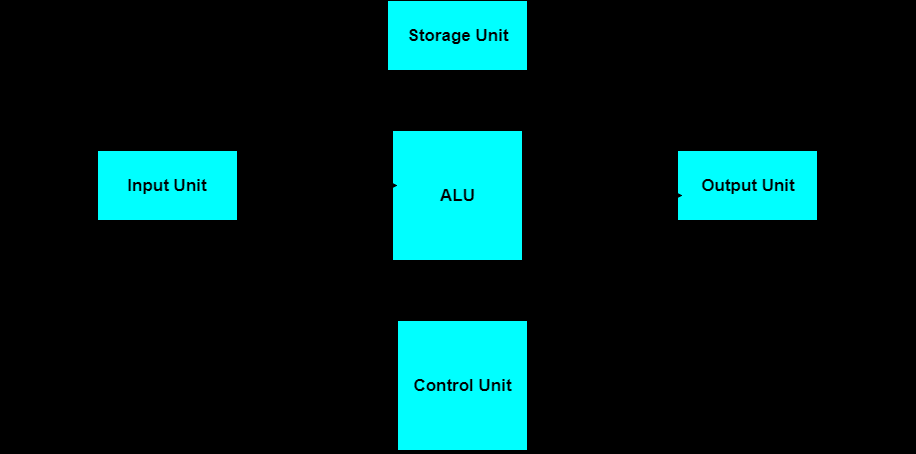

Computer Architecture
Links:
Basic units of Computer System
Computer is an electronic machine that makes performing any task very easy. In computer, the CPU executes each instruction provided to it, in a series of steps, this series of steps is called Machine Cycle, and is repeated for each instruction. One machine cycle involves fetching of instruction, decoding the instruction, transferring the data, executing the instruction
Computer system has five basic units that help the computer to perform operations, which are given below:
- Input Unit
- Output Unit
- Storage Unit
- Arithmetic Logic Unit
- Control Unit
